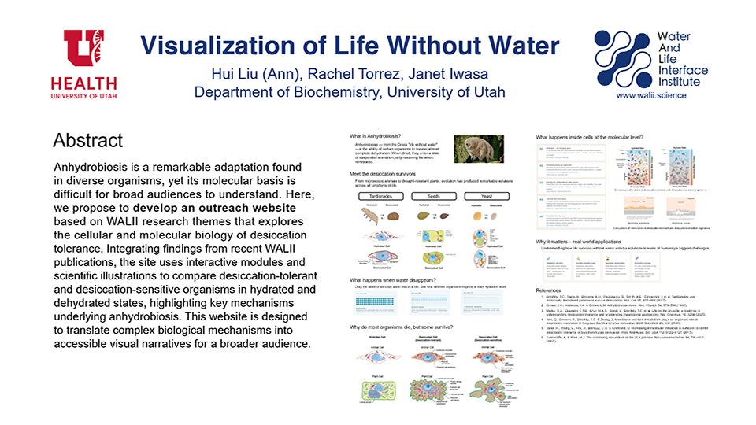

Interactives

SARS-CoV-2 Life Cycle Interactive Platformm
This interactive annotation interface was developed to facilitate rapid, transparent knowledge sharing about the SARS-CoV-2 life cycle. This platform presents detailed molecular animations and allows users to explore the scientific data used to create the animations and engage in discussion through comments and questions.
